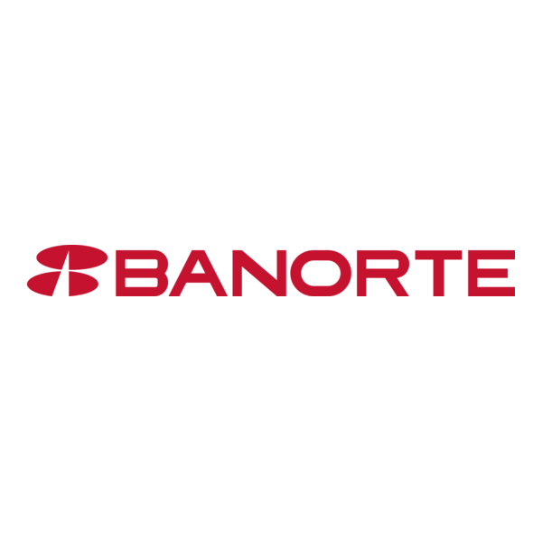
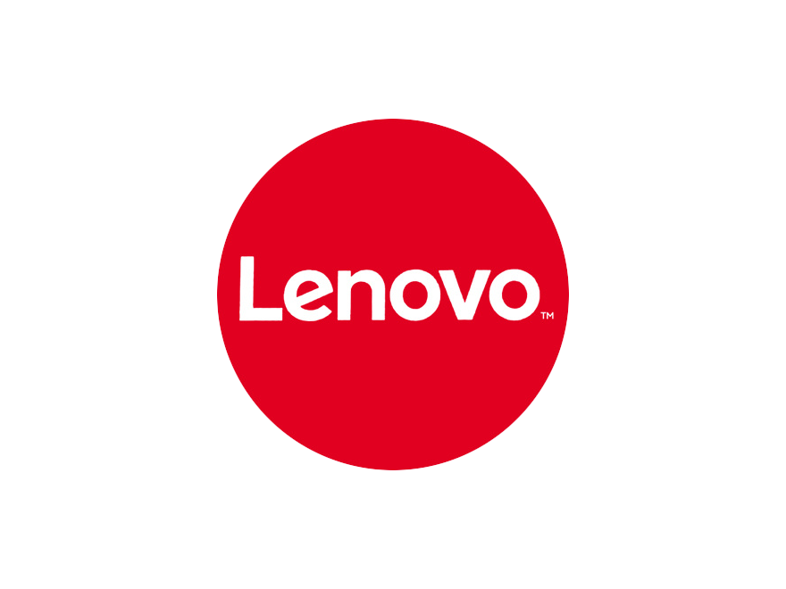

Actividad Fundamental 6: Portafolio de Prácticas Profesionales
En esta página web he documentado el análisis de tres de las empresas más importantes en el ámbito tecnológico e industrial de la región. El objetivo es evaluar mis opciones preferidas para realizar prácticas profesionales en el periodo Agosto - Diciembre 2027.
Empresas Objetivo
| Imagen Representativa | Nombre de la Empresa | Sector / Giro Principal | Acción |
|---|---|---|---|
| Ternium México | Industria Siderúrgica, Acero y Automatización 4.0 | ||
 |
Grupo Banorte | Banca, Finanzas, Seguridad de la Información y Base de Datos | |
 |
Lenovo | Tecnología de Hardware, Servidores y Redes Empresariales |
Ternium México
Giro de la empresa
Ternium es una empresa líder en la industria siderúrgica en América Latina, dedicada a la producción y procesamiento de acero. En la actualidad, su giro ha evolucionado hacia la Industria 4.0, integrando procesos de automatización, análisis de datos industriales, y tecnologías de la información aplicadas directamente a las líneas de manufactura.
Historia
Ternium tiene profundas raíces en el estado de Nuevo León. Su historia local está fuertemente ligada a la fundación de Hylsa (Hojalata y Lámina S.A.) en 1942, pionera en el proceso de reducción directa de hierro. En 2005, mediante la consolidación de varias acereras latinoamericanas, nace oficialmente Ternium. Hoy en día, cuentan con plantas industriales de clase mundial, como la ubicada en el municipio de Pesquería y la histórica planta de San Nicolás, frente a la UANL.
Por qué lo elegiría para hacer mis prácticas profesionales
Como estudiante de 5.º semestre de la carrera de Ingeniería en Administración y Sistemas (IAS) en la Facultad de Ingeniería Mecánica y Eléctrica (FIME) de la Universidad Autónoma de Nuevo León (UANL), tengo como meta principal realizar mis prácticas profesionales en el futuro periodo Enero - Junio 2027. Ternium me resulta sumamente atractiva debido a su sólido y estructurado programa de becarios.
Me entusiasma enormemente la posibilidad de aplicar y potenciar mis conocimientos técnicos en un entorno industrial real. Cuento con habilidades en el desarrollo backend utilizando Java y Python, manejo de bases de datos SQLite y fundamentos sólidos gracias a mi preparación académica. Creo firmemente que la integración de estos conocimientos técnicos con mi perfil administrativo de IAS encaja perfectamente en los sistemas de mejora continua y control operativo que Ternium busca en sus practicantes.
Vacantes en el ámbito de TI
| Puesto Solicitado | Conocimientos / Herramientas | Modalidad |
|---|---|---|
| Prácticas Profesionales Feb-Jun 2027 (Sistemas / TI) | Estudiante activo a partir de 5° semestre, Promedio mín. 85, Inglés intermedio-avanzado | Presencial / San Nicolás de los Garza |
| Programa Global Trainee - TI y Mejora Continua | Egresados o próximos a graduarse (menos de 3 años de exp.), Agilidad, Liderazgo | Rotación en Plantas Industriales |
| Practicante de Proyectos y Análisis de Datos | Desarrollo de proyectos autónomos, Análisis de información, Mejora de procesos operativos | Presencial / Monterrey y Área Metropolitana |
Grupo Financiero Banorte
Giro de la empresa
Grupo Financiero Banorte pertenece al sector de banca y finanzas. Es una de las instituciones financieras más grandes y sólidas de México. El giro tecnológico dentro del banco es crítico, abarcando desde la protección de datos y ciberseguridad, hasta la modernización de aplicaciones móviles y gestión de gigantescas bases de datos transaccionales.
Historia
Fundado en 1899 en la ciudad de Monterrey, Nuevo León, bajo el nombre de Banco Mercantil de Monterrey. Después de fusiones importantes a lo largo del siglo XX (notablemente con Banco Regional del Norte), se consolidó como Banorte. Hoy en día se enorgullece de ser "El Banco Fuerte de México", siendo la institución financiera líder sin control extranjero y con una fuerte inversión en innovación digital.
Por qué lo elegiría para hacer mis prácticas profesionales
Como estudiante de 5.º semestre de IAS en la UANL, considero que el sector financiero es uno de los más retadores y enriquecedores para mi carrera. Mi interés por integrarme a Banorte en el periodo Enero - Junio 2027 surge de la enorme necesidad que tienen los bancos de gestionar grandes volúmenes de información de manera rápida y, sobre todo, segura.
Quiero poner a prueba y expandir mis habilidades en la estructuración de bases de datos (trabajando con entornos como SQLite para escalar a arquitecturas mayores), así como aplicar mi lógica de desarrollo backend con Java y Python para la optimización de procesos internos. Trabajar en Banorte me permitiría entender la arquitectura detrás de una banca digital líder y adentrarme más en la cultura DevOps aplicada a los servicios financieros.
Vacantes en el ámbito de TI
| Puesto Solicitado | Conocimientos / Herramientas | Modalidad |
|---|---|---|
| Programa Talento Joven (Prácticas) - Analista Gobierno de Datos | Estudiantes de Ingeniería en Sistemas o afín, manejo de SQL, normalización y análisis de bases de datos | Presencial / Monterrey |
| Becario de Soluciones Operativas y Seguridad TI | Conocimientos en redes, sistemas operativos, gestión de incidentes y control de accesos lógicos | Híbrido / Monterrey y San Pedro |
| Practicante de Desarrollo Empresarial y Sistemas | Estudiante a partir de 5° semestre, lógica de programación (Backend), optimización y mejora continua de procesos | Presencial / Monterrey Sur |
Lenovo Monterrey
Giro de la empresa
Lenovo es un gigante multinacional en el sector de la tecnología de la información. Se dedica al diseño, manufactura y comercialización de ordenadores personales, servidores, dispositivos de almacenamiento y soluciones de red (hardware y software), brindando infraestructura para centros de datos de nivel mundial.
Historia
Fundada en 1984 en Pekín, Lenovo adquirió gran relevancia internacional cuando compró la división de ordenadores personales de IBM en 2005. En el estado de Nuevo León, Lenovo estableció en Apodaca una de sus plantas de manufactura de servidores y centros de datos más importantes del mundo, inaugurada a finales de la década de 2000, desde donde se exporta equipo a todo el continente.
Por qué lo elegiría para hacer mis prácticas profesionales
Mi formación técnica actual incluye fundamentos en la certificación CCNA 1, lo cual ha despertado en mí un fuerte interés por la infraestructura y conectividad. Como futuro egresado de la carrera de Ingeniería en Administración y Sistemas (IAS) en la Facultad de Ingeniería Mecánica y Eléctrica (FIME) de la Universidad Autónoma de Nuevo León (UANL), veo en Lenovo el escenario perfecto para llevar a cabo mis prácticas en Enero - Junio 2027.
Lenovo representa una oportunidad ideal para sumergirme en el hardware, las redes corporativas y el soporte técnico de alto nivel. La posibilidad de colaborar con equipos globales, aplicar mis bases en redes (CCNA 1) y combinarlo con conocimientos de programación backend (Python/Java) para automatizar diagnósticos o tareas administrativas, es un reto que me motiva profundamente a buscar una posición dentro de sus instalaciones.
Vacantes en el ámbito de TI
| Puesto Solicitado | Conocimientos / Herramientas | Modalidad |
|---|---|---|
| Estudiante / Practicante de Redes e Infraestructura (Data Center) | Estudiante de 5° semestre en adelante, bases de redes (CCNA), soporte a servidores y hardware corporativo, Inglés intermedio | Presencial / Planta Apodaca |
| Project Management Intern (Mejora Continua y TI) | Inglés avanzado, Excel intermedio, metodologías ágiles, administración de recursos operativos y seguimiento de proyectos | Híbrido / Apodaca |
| Becario de Automatización de Pruebas y Software | Lógica de programación (Python, Java), manejo de bases de datos, interés en crear scripts para optimizar procesos de manufactura | Presencial / Planta Apodaca |